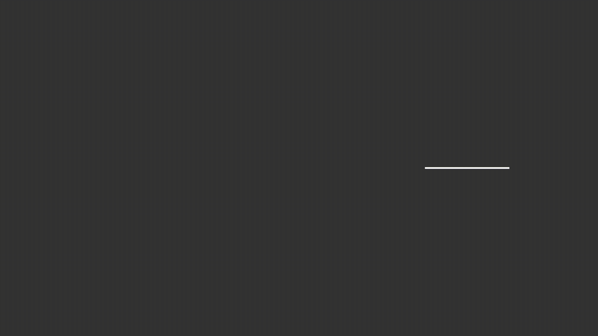

manim¶
Manim 是一个精确编程动画的引擎，旨在创建解释性的数学视频。
注意，有两个版本的 manim 。这个 仓库 最初是 3Blue1Brown 的作者的一个个人项目，目的是为这些 视频制作动画，视频的具体代码可以在 这里 找到。 2020年，一群开发者将其 Fork 为 社区版， 目的是为了更稳定、更好地测试、更快地响应社区的贡献，以及更友好地开始使用。你可以 通过加入讨论区来参与这个社区。
自从 Fork 以来，当前版本已经发展到在 OpenGL 的基础上工作，并允许在场景最终确定并 写入文件之前实时渲染到一个交互式窗口。
教程¶
预览¶
Shapes.py¶
from manimlib import *
class Shapes(Scene):
# A few simple shapes
# Python 2.7 version runs in Python 3.7 without changes
def construct(self):
circle = Circle()
square = Square()
line=Line(np.array([3,0,0]),np.array([5,0,0]))
triangle=Polygon(np.array([0,0,0]),np.array([1,1,0]),np.array([1,-1,0]))
self.add(line)
self.play(ShowCreation(circle))
self.play(FadeOut(circle))
self.play(GrowFromCenter(square))
self.play(Transform(square,triangle))
渲染效果：

MoreShapes.py¶
from manimlib import *
class MoreShapes(Scene):
# A few more simple shapes
# 2.7 version runs in 3.7 without any changes
# Note: I fixed my 'play command not found' issue by installing sox
def construct(self):
circle = Circle(color=PURPLE_A)
square = Square(fill_color=GOLD_B, fill_opacity=1, color=GOLD_A)
square.move_to(UP+LEFT)
circle.surround(square)
rectangle = Rectangle(height=2, width=3)
ellipse=Ellipse(width=3, height=1, color=RED)
ellipse.shift(2*DOWN+2*RIGHT)
pointer = CurvedArrow(2*RIGHT,5*RIGHT,color=MAROON_C)
arrow = Arrow(LEFT,UP)
arrow.next_to(circle,DOWN+LEFT)
rectangle.next_to(arrow,DOWN+LEFT)
ring=Annulus(inner_radius=.5, outer_radius=1, color=BLUE)
ring.next_to(ellipse, RIGHT)
self.add(pointer)
self.play(FadeIn(square))
self.play(Rotating(square),FadeIn(circle))
self.play(GrowArrow(arrow))
self.play(GrowFromCenter(rectangle), GrowFromCenter(ellipse), GrowFromCenter(ring))
渲染效果：

安装¶
Manim 在 Python 3.6 或更高版本上运行（推荐使用 Python 3.8）。
系统要求是 FFmpeg 、OpenGL 和 LaTeX （可选，如果你想使用 LaTeX）。
直接安装（Windows系统）：
安装 LaTeX 发行版。 建议使用 MiKTeX ;
安装其余的 Python 软件包:
git clone https://github.com/3b1b/manim.git
cd manim
pip install -e .
manimgl example_scenes.py OpeningManimExample
命令行参数说明： python -m manimlib -h